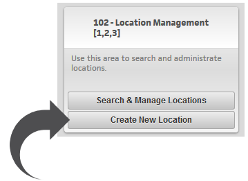
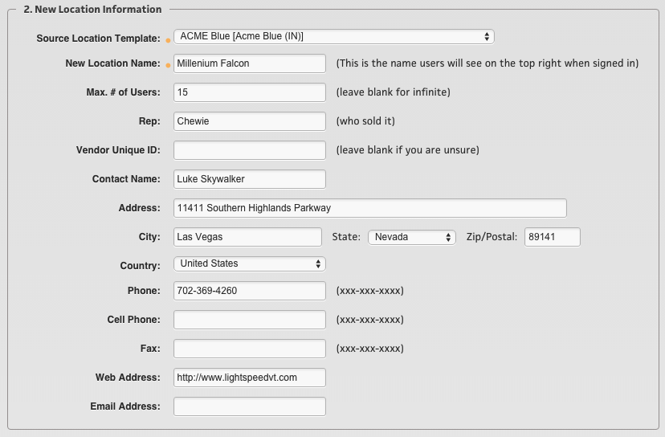
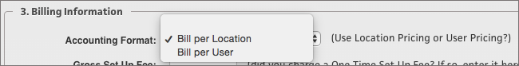

Creating New Locations
To create a new location, navigate to the Super User Dashboard and select "Create New Location" under 102 - Location Management.
This will allow you to create a new location in any System that you currently have Super User Access to.

New Location Information
Step 1. Select the “System” that you want to create this New Location within.
Step 2. Fill out the “New Location Information" - starting with which Template Location you want to ‘clone’ this new Location from (more about how Template Locations work is below).
Now you can fill out all of the other information about this Location. The fields with the orange dot indicate a required field. The image below is an example of this screen.

Step 3. Fill out the Billing Information
First you will indicate if it is “Bill per Location” or “Bill per User.”

These fields below apply, whether it is being charged “By Location” or “By User.”
- Gross Set Up Fee - if you charged a one Time Set Up fee, put in the dollar amount here.
- Gross License Fee - this is the price is was sold for.
- License Frequency - this is how often the license fee is charged; in month(s). A monthly charge would be “1” and annual charge would be “12” (12 months), or leave it blank if it is a charge that is incurred once, and never again.
- Begin Bill Date: This is inserted for you with the “creation date” of this New Location. If you need this changed, please specify this in the “Billing Notes” filed at the bottom of this section. This will also be considered the Contract Start Date.
- Contract End Date - this is an optional field where you can indicate when this contract expires.
- Grace Period - this only applies when the “Auto Expire” Check box is indeed checked. The Grace Period allows you to give the Location a grace period to renew by. If you choose to Auto Expire a Location, it will expire on the Grace Period Date. Alternatively, if no Grace Period Date is entered, the Location will expire on the Contract End Date.
Note
If you intend for this Location to just renew in a ‘month to month’ format after the Contract End date, then simply do not check the “Auto Expire” check box, and it will not get automatically deactivated on that date and it will roll over to a ‘month to month’ status.
- Billing Notes - this is an open text field for you to note anything you would like the LSVT Accounting Dept. to know. These notes are only seen by you and the LSVT Accounting Dept.- they are not seen on the front end by your customers.
- Contract - this is where you will upload the contract for this New Location to be stored. (end bullet list)
Step 4. - Location Notes - this is a simple optional open field that you can utilize to indicate any helpful ‘notes’ about this Location that you and your customers can see on the front end to better describe what the Location is being used for. You can also update this text in the “Location Settings” at any time.
When you are ready, click the “Create Location” button and this Location is ready to use right away.
Note
This newly created Location is ready to use right away, but it will also be sent to the LSVT Accounting Dept. in a “Pending Approval” status for review. If the LSVT Accounting team has any questions about it, they will contact you directly prior to placing it in an “Approved” status.
Template Locations
Here is some additional information below about how ”Template Locations” work.
When new Locations are created, we follow this process of cloning them from an existing “Template” Location so that the basic settings are all in place, and make it easier and faster for you as an Administrator to create new Locations. It also helps you ensure that it is created correctly Below are a list of settings that are cloned in this process.
- The Theme - this process will place the new Location in the same System and use the same Theme as the Template Location.
- Courseware - all of the courses that are active in the Template Location will be the exact set that are active for this New Location.
- Super User List - all of the Super Users that have access to the Template Location will now also have access to this newly created Location.
- Main Menu messages - the Main Menu welcome message video, the Main Menu bulletin board message and the left and right images and messages will all be used.